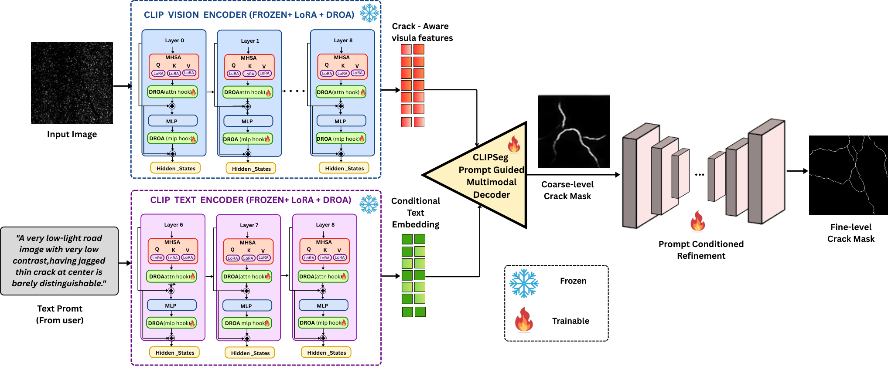
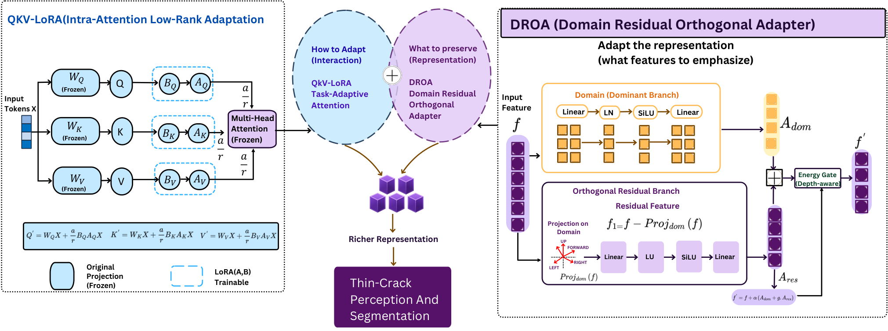
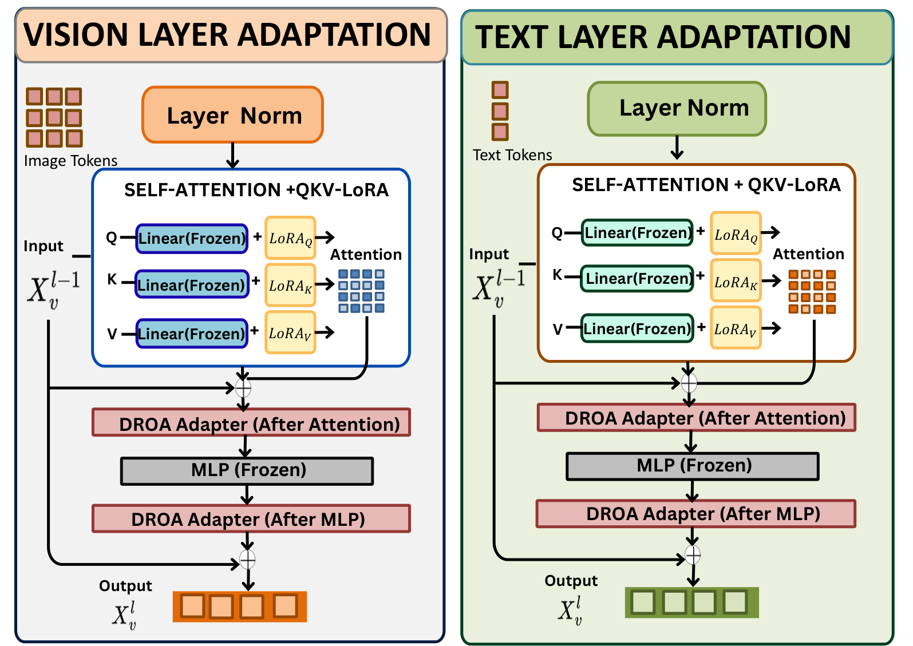
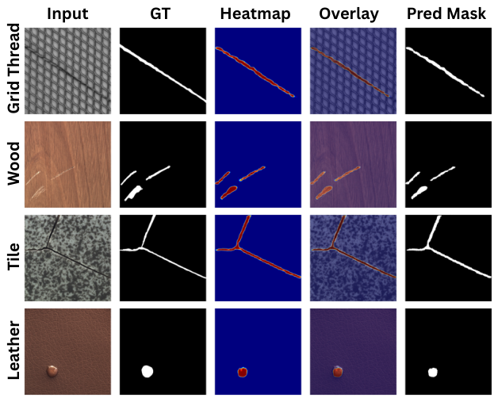
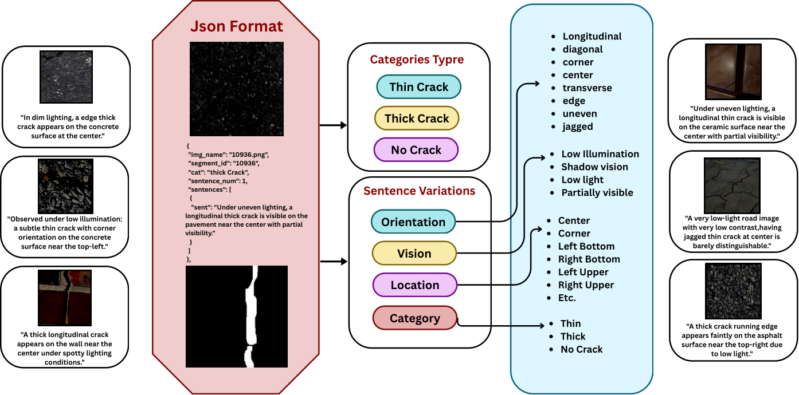
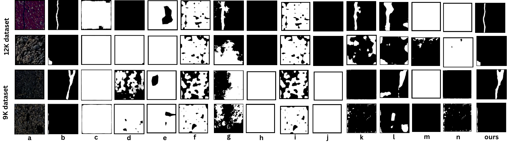
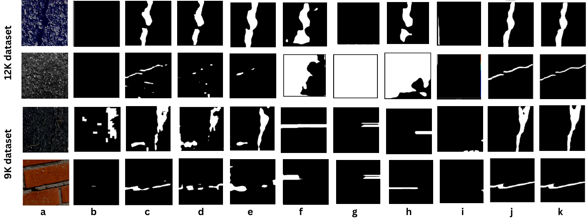

DROA-CLIPSeg
DROA-CLIPSeg：提示词引导的低光照细裂缝分割
摘要
低光照下的路面裂缝分割会受到对比度降低、阴影、车灯眩光、接缝、污渍和潮湿接缝的干扰而性能下降。现有裂缝分割方法大多假设光照良好。低光照增强方法可改善视觉质量，但并未显式保持裂缝拓扑。为解决这些局限，我们将低光照裂缝分割建模为一个退化感知、提示词锚定的结构缺陷分割问题，并提出 DROA-CLIPSeg——一种参数高效框架，利用两个轻量模块使冻结的 CLIPSeg 视觉-语言主干适配该任务。将 QKV 低秩适应注入视觉与文本编码器的 // 投影中，以在不微调主干的情况下改善裂缝特定的图像-文本对齐。所提出的域残差正交适配器（DROA）将中间特征分解为主导裂缝域分支和正交残差分支；前者捕捉低光照下反复出现的裂缝模式，后者保留通常会被噪声、阴影或过度平滑抑制的微弱、细小和碎片化证据。我们还引入了 CrackLingo-9K 和 CrackLingo-12K，它们分别是 Crack9k 和 Crack12k 的文本增强版本，带有裂缝感知提示词。DROA-CLIPSeg 仅训练 M 个参数（相当于完整模型的 ），在两个数据划分上均优于 9 个零样本和 4 个微调视觉-语言基线，并在不同纹理和缺陷形态上零样本泛化到 MVTec-AD，且通过大量消融实验得到验证。我们的源代码已公开于 https://github.com/VShuklacode/DROA-CLIPSeg
††affiliation: Indian Institute of Technology Kanpur
1 引言
路面裂缝是结构疲劳的早期征兆；若未被及时发现，它们会发展成坑洞、剥落等安全隐患，因此基于车载摄像头与无人机的自动检测已成为活跃的研究方向 [36, 25, 43, 26]。有两种情形仍然制约着实际部署：低光照采集与细长发丝裂缝。在低光照下，对比度下降与传感器噪声放大使发丝裂缝与阴影、油污、接缝和湿缝混为一体；因此在光照良好的路面图像上训练的纯视觉模型，要么把阴影误检为裂缝，要么漏检微弱裂缝。通用低光照增强方法 [1, 10, 15, 21, 3] 是针对感知质量而非下游分割网络所依赖的结构线索训练的，而把增强器串联在分割器之前，会在我们恰恰想要保留的细结构处引入伪影，同期的低光照裂缝分割工作也报告了这一点 [4]。与此同时，视觉–语言基础模型：CLIP [33]、CLIPSeg [27]、LSeg [20]、GroupViT [41]、CRIS [39]、OVSeg [24]、SAM [17]，以及近期具备异常感知能力的 AA-CLIP [29]，都表明自然语言提示词能为稠密预测注入强大的语义先验。对于表面缺陷而言，这类先验尤其有吸引力：像“深色沥青上一条细长的纵向发丝裂缝”这样的短语，编码了视觉特征 与表面上下文，而纯视觉编码器很少能从小规模裂缝数据集中学到这些信息。然而在低光照条件下直接使用现成的 CLIPSeg 并不可取：它是在自然图像上训练的，并未针对细长的亚像素结构做专门优化，而完整微调会破坏主干网络的泛化能力，并过拟合到小规模裂缝基准上 [44]。相比之下，专门面向低光照裂缝分割的方法 [9] 依然稀缺，且架构较为单一。CrackNex [44] 在少样本条件下通过 Retinex 反射率先验恢复对比度，而 CLCNet [4] 通过对配对道路图像的跨光照对比训练来对齐白天与夜间特征；两者都是仅采用 CNN/RGB 的流水线，分别依赖显式增强阶段或配对跨光照监督，且仅在小规模同域基准上得到验证，并未利用语言先验。据我们所知，尚无先前方法将视觉–语言提示词与低光照细裂缝分割相结合，这使得该具有重要实用价值的场景基本处于空白，也由此引出了下文的设计。
我们提出DROA-CLIPSeg，这是一种参数高效的提示词引导框架，通过两种互补机制适配冻结的 CLIPSeg。基于参数高效适配[31, 13, 14, 5, 45, 32]，我们在视觉和文本自注意力层的//投影中注入可训练的 LoRA 因子，调节词元（Token）如何交互，且不改变任何骨干网络权重。随后，我们在每个注意力块和 MLP 块之后放置域–残差正交适配器（Domain–Residual Orthogonal Adapter，DROA），该适配器将中间特征分解为主导的裂缝域分支和正交残差分支，并通过可学习的能量门进行融合；这种分解既保留了强烈且重复出现的裂缝外观，也保留了细裂缝微弱、碎片化的证据，而标准适配器往往会抑制这些证据。我们手动为Crack9k和Crack12k标注裂缝的位置、表面和类型（thin/thick/none）描述。
贡献。（i）一种面向细小、低光照裂缝分割的参数高效提示词引导框架，该框架适配完全冻结的 CLIPSeg 骨干网络，仅训练 M 个新参数；（ii）域–残差正交适配器（DROA），它通过在能量门控注入下将裂缝特定证据路由到正交的主导子空间和残差子空间，来补充 LoRA；（iii）Crack9k/Crack12k 的裂缝感知文本标注，包含位置、表面和类型描述；（iv）大量实验与消融实验表明，在两个基准（测试集）上均取得一致的 Dice/IoU 增益，其中细裂缝子集上的提升最大。
2 相关工作
2.1 面向分割的视觉–语言基础模型
早期的裂缝分割方法采用 CNN/Transformer 掩码分类骨干网络（CRACK500 [43]、CrackFormer [25]、MaskFormer [7]、Mask2Former [6]、SegFormer [40]、HRNet [38]、SCSegamba [26]、CrackNex [44]），仅处理 RGB 图像，在弱光条件下依然脆弱，这促使我们转向视觉—语言基础模型。CLIP [33] 在网络规模的数据上对齐图像嵌入与文本嵌入；LSeg [20] 和 GroupViT [41] 将其扩展到基于类别名称提示词的逐像素分割，而 CRIS [39] 和 CLIPSeg [27] 则生成以自由形式文本为条件的二值掩码。OVSeg [24] 将 CLIP 改造用于掩码区域识别，SAM [17] 将可提示分割扩展到十亿级掩码训练，AA-CLIP [29] 则重新对齐 CLIP 的文本—视觉空间以实现异常判别。然而，这些基础模型是在自然图像分布上训练的，并不专门针对退化照度下路面裂缝的细长、低对比度结构；同期的弱光裂缝分割工作 [[4]4] 证实，仍需进行可见度感知的适配。我们采用冻结的 CLIPSeg，因为它已经过训练，可从自由形式文本生成二值掩码，与我们逐提示词的裂缝标注相匹配，并且附带一个紧凑的解码器，能在车载参数预算下给出强基线。
2.2 视觉 Transformer 的参数高效适配
对大型视觉—语言模型（VLM）进行全量微调代价高昂，且会削弱其在小规模目标上的泛化能力。参数高效迁移学习（PETL）改为在冻结的骨干网络中插入少量可训练参数：LoRA [13] 将权重更新分解为低秩矩阵，而 AdaptFormer [5]、VPT [14]、SSF [22]、VL-Adapter [37]、AdaLoRA [45] 以及近期的 EVA [32] 分别探讨了插入位置、参数化方式、秩分配与数据驱动初始化。在分割任务中，Conv-LoRA [46] 为面向 SAM 的 LoRA 注入卷积偏置，证实了在低数据量场景下 PETL 优于全量微调。我们的域—残差正交适配器有两点不同：它作用于特征而非权重，因此与 LoRA 形成互补（LoRA 控制词元如何进行注意力交互，DROA 控制保留哪些特征信息）；并且它显式地将每个特征分解为主导子空间与由自身能量门控的正交残差子空间，这种结构旨在保留发丝裂缝微弱的亚像素信号，而不是在通用瓶颈层中将其平均掉。
3 方法ology
本工作提出一种参数高效的提示词引导裂缝分割框架，称为DROA-CLIPSeg，用于检测细窄、低对比度且结构微弱的裂缝区域。所提出模型建立在冻结的 CLIPSeg 主干网络之上，并引入两种互补的适配机制：自注意力层内部的QKV 低秩适应，以及注意力与 MLP 块之后的域–残差正交适配器。其核心思想是在保留 CLIPSeg 强大的预训练视觉-语言表示的同时，以少量可训练参数注入面向裂缝的适配。 给定输入道路图像和自然语言裂缝提示词，模型预测二值裂缝分割掩码：
| (1) |
其中表示输入图像，表示文本提示词，为预测的裂缝概率图，表示所提出的提示词引导分割模型。训练时，预测掩码由真值裂缝掩码监督。
3.1 总体架构
所提出的框架由五个主要组件构成：冻结的 CLIP 视觉编码器、冻结的 CLIP 文本编码器、QKV-LoRA 模块、域–残差正交适配器以及轻量级细化头，如图1所示。图像编码器从输入图像中提取视觉特征，而文本编码器将裂缝相关提示词转换为语义嵌入。随后，这些经过适配的视觉表示与文本表示被送入 CLIPSeg 解码器，以产生粗糙分割掩码。最后，细化头提升预测裂缝掩码的空间质量。整体预测过程可写为：

| (2) | ||||||
| (3) |
其中为 CLIP 视觉编码器，为 CLIP 文本编码器，表示裂缝感知视觉特征，表示适配后的文本嵌入，为 CLIPSeg 解码器，为粗糙裂缝掩码，为细化 CNN。
在我们的实现中，原始 CLIPSeg 主干网络保持冻结。仅训练所提出的适配模块与细化头。该设计显著减少了可训练参数数量，同时保留了预训练视觉-语言模型的泛化能力。
3.2 提示词引导裂缝分割
输入文本提示词为所提出模型提供语义引导。模型并非仅从图像特征学习分割，而是接收裂缝特定的文本线索，如“细裂缝”、“纵向裂缝”或“横向裂缝”。文本提示词由冻结的 CLIP 文本编码器编码，然后使用所提出的适配器模块进行适配。
令表示输入文本提示词，其中表示第个词元，为文本词元数量。文本编码器产生提示词嵌入：
| (4) |
其中是全局文本嵌入，是文本特征维度。该嵌入作为CLIPSeg解码器的语义条件，使解码器能够聚焦于类裂缝结构，而不是一般边缘或背景纹理。
3.3 QKV 低秩适配
尽管 CLIPSeg 主干网络提供了强大的预训练特征，但直接将其用于细裂缝分割可能并非最优，因为裂缝通常狭窄、破碎，并且在视觉上类似于阴影、道路标线或背景噪声。为了在不完全微调主干网络的情况下适配注意力机制，我们在 Transformer 注意力层的查询、键和值投影中引入可训练的低秩更新，如图 2 所示。

对于输入词元特征 ，原始冻结的注意力投影为：
| (5) |
其中，、和分别是冻结的查询、键和值投影矩阵。这里，表示查询特征，表示键特征，表示值特征，是特征维度。我们没有更新完整矩阵 、和，而是加入可训练的低秩更新：
| (6) |
每个低秩更新分解为：
| (7) |
其中，和是可训练的低秩矩阵，是适配的秩，是控制 LoRA 更新强度的缩放因子。原始预训练权重 保持冻结，而仅优化 和。因此，适配后的投影可以写为：
| (8) |
这种 QKV-LoRA 适配改变了词元彼此关注的方式。对于裂缝分割而言，这一点很重要，因为模型必须学习不连通裂缝碎片之间的长程连续性，并抑制阴影、污渍和道路纹理等无关结构。
在所提出的实现中，QKV-LoRA 被插入视觉编码器层和选定的文本编码器层。视觉编码器适配使模型能够捕获图像中的细微裂缝结构，而文本编码器适配则改善了裂缝提示词与视觉特征之间的装调（对准）。
3.4 域–残差正交适配器
虽然 QKV-LoRA 适配了注意力交互，但它并未显式地将主导的裂缝域信息与微弱的残差裂缝模式分开。细裂缝通常较淡，在特征变换过程中可能被抑制。为解决这一局限，我们引入域–残差正交适配器，简称为DROA，如图 3(a) 所示。

(a) DROA 模块（视觉与文本层适配）

(b) 在 MVTec-AD 上的零样本泛化 [2]
DROA 模块从 Transformer 层接收中间特征表示 。它生成两个互补的特征更新：主域更新与正交残差更新。主分支捕获强烈且反复出现的裂纹域特征：
| (9) |
其中 是主裂纹域更新， 和 是可训练的线性投影矩阵， 表示层归一化， 表示如 SiLU 的非线性激活函数。主分支学习主要的裂纹相关表示。然而，仅依赖该分支可能会过度强调强裂纹区域，而忽略微弱或细小裂纹像素。因此，引入残差分支以保留弱裂纹证据。首先，将输入特征投影到远离主分支的方向：
| (10) |
其中 是残差特征， 是 在主裂纹域方向上的投影。该操作促使残差分支关注互补信息，而不是重复主分支。残差分支随后计算为：
| (11) |
其中 是残差更新， 和 是残差分支的可训练线性投影矩阵。最终适配特征通过组合原始特征、主更新与门控残差更新得到：
| (12) |
其中 是适配输出特征， 是缩放系数， 是控制残差分支贡献的可学习能量门。门 定义为：
| (13) |
其中 是可学习的标量或向量参数， 是 sigmoid 函数。sigmoid 将门值限制在范围 内，使模型能够平滑地控制应保留多少残差信息。DROA 的作用不同于 QKV-LoRA。QKV-LoRA 适配注意力操作，而 DROA 适配注意力与多层感知机（MLP）变换后的表示。因此，这两种机制互补：QKV-LoRA 控制 词元（Token）如何交互，而 DROA 控制 保留或强调哪些特征信息。
3.5 适配器放置策略
所提出的适配模块被插入到冻结的 CLIPSeg 主干网络中精心选择的位置。在视觉编码器中，适配器应用于各视觉 Transformer 层，以在多个表示层级捕获裂纹模式。浅层保留局部纹理与边缘信息，而更深层捕获更具语义的裂纹结构。
对于视觉编码器，QKV-LoRA 插入到注意力投影中，DROA 插入到注意力输出投影之后以及 MLP 块之后。对于 Transformer 层 ，适配过程可写为：
| (14) | ||||||
| (15) |
其中 为第 层的输入特征， 为经 LoRA 自适应的注意力模块的输出， 为经 DROA 自适应后的注意力输出， 为 MLP 的输出， 为第 层最终的自适应输出。对于文本编码器，适配器主要插入较深的层。这是因为文本模型的底层主要编码词汇信息，而高层则携带更多与提示词相关的语义信息，例如裂缝类型、方向和严重程度。因此，在靠后的层进行自适应有助于改善任务特定的图文装调（对准），同时不破坏预训练文本编码器的通用语言结构。
3.7 CLIPSeg 解码器
在视觉与文本自适应之后，CLIPSeg 解码器将图像特征与文本嵌入相结合，生成粗粒度裂缝掩膜。令 表示自适应后的视觉特征， 表示自适应后的文本嵌入。解码器的输出为：
| (16) |
其中 为较低空间分辨率下的粗粒度裂缝预测图。解码器以文本嵌入作为条件，使分割输出能够受裂缝提示词的引导。
这种由提示词引导的解码对裂缝分割尤其有用，因为裂缝在外观上可能与图像中其他细长结构相似。文本条件有助于将预测偏置向裂缝状缺陷倾斜，而不是一般的线条、阴影或道路边界。
3.7 提示词条件化细化头
由于图像块级编码与解码器上采样的影响，CLIPSeg 解码器生成的粗掩膜可能丢失精细的空间细节。细小裂缝要求精确的边界定位与连续性保持。因此，我们在解码器之后添加一个轻量级细化头。该细化头接收经上采样的粗掩膜，并产生最终的分割结果：
| (17) |
其中 表示双线性上采样， 表示细化卷积神经网络（CNN）。该细化头可改善裂缝的局部连续性、抑制孤立的假阳性，并使细小裂缝的边界更加锐利。
3.8 细小裂缝感知训练目标
裂缝分割面临严重的类别不平衡问题，因为裂缝像素仅占图像的一小部分。标准的二元交叉熵损失可能使模型偏置向背景类别。为解决这一问题，我们采用由加权二元交叉熵、Dice 损失和结构连通性监督组成的细小裂缝感知训练目标。加权二元交叉熵损失定义为：
| (18) |
其中 为像素 处的真值标签， 为预测的裂缝概率， 和 分别为图像的高度和宽度， 为用于强调裂缝像素的正类权重。Dice 损失用于改善预测掩膜与真值掩膜之间的重叠程度：
| (19) |
其中 是为避免除零而加入的小常数。为改善对细小且连通的裂缝结构的保持，可加入骨架或连通性感知项：
| (20) |
其中 表示骨架化或软骨架提取操作。该项促使模型保持裂缝中心线，并减少碎片化的预测。最终的训练目标为：
| (21) |
其中 、 和 为控制各损失项贡献的加权系数。
3.9 训练策略
在训练过程中，原始 CLIPSeg 的视觉编码器、文本编码器和解码器权重保持冻结。仅优化 QKV-LoRA 参数、DROA 适配器参数、条件文本适配器以及细化头。该设计具有三个优势。第一，与全量微调相比，它降低了计算成本。第二，它避免了在有限的裂缝数据集上过拟合。第三，它保留了 CLIPSeg 学到的通用视觉-语言知识，同时允许针对细裂缝分割进行任务特定的自适应。
令 、 和 分别表示 QKV-LoRA、DROA 和细化头的可训练参数。待优化的参数集为：
| (22) |
其中 表示条件文本适配器的参数。冻结的 CLIPSeg 参数不更新。优化目标为：
| (23) |
这里， 表示最终优化得到的可训练参数。QKV-LoRA 与 DROA 发挥互补作用：LoRA 调制词元在注意力投影中的交互方式，而 DROA 将每个注意力后特征分解为占主导地位的裂缝域子空间和一个保留微弱细裂缝证据的正交残差子空间。结合以提示词为条件的 CLIPSeg 解码器，该设计使冻结的视觉-语言主干能够适应低光照、低对比度的细裂缝分割；扩展的方法学讨论见补充材料。
4 实验
实验设置。
我们以 对 CrackSeg-9K 和 CrackVision-12K 进行逐通道暗化，构建 CrackLingo-9K/-12K，并为每张图像配对来自 annotations/{train,val,test}.json 的逐样本 VLM 描述文本。冻结的 CLIPSeg 主干（ M；CLIP-ViT-B/16 视觉部分、CLIP-base 文本部分、 维 FiLM 解码器）仅增加 M（）可训练参数，即在全部九个视觉自注意力块和最后三个文本自注意力块上加入 QKV-LoRA（， M），并在每个 MLP 处挂载 DROA（秩 ，跨早/中/深层的 dominant ratios 为 //， M）。我们使用类别感知的 BCE+Dice（/）最小化 ，采用 细/粗/无裂缝重新加权以及 细裂缝过采样，使用 AdamW（，权重衰减 ），批量大小 ， 输入，余弦调度并带 轮次预热，在单个 H200 MIG 切片（ GB， h）上训练 轮次。我们在阈值 下报告 F1（Dice）、IoU、精密度、召回率、准确度，以及图像/像素级 AUROC、AP 和最佳阈值 F1；完整的超参数、数据增强流程、AUROC/AP 子采样和种子列表见补充材料。
| CrackLingo-9K () | ||||
|---|---|---|---|---|
| Model | Img-A | Pix-A | Dice(px) | Dice(img) |
| CLIPSeg (CVPR’22) [28] | 52.76 | 52.76 | 7.75 | 4.46 |
| LSeg (ICLR’22) [19] | 53.11 | 53.11 | 5.46 | 3.69 |
| DenseCLIP† (CVPR’22) [34] | 11.34 | 11.34 | 6.39 | 6.06 |
| MaskCLIP (ECCV’22) [47] | 28.74 | 28.74 | 7.18 | 7.23 |
| OV-Seg (CVPR’23) [23] | 38.78 | 38.78 | 6.58 | 6.67 |
| SAN (CVPR’23) [42] | 53.03 | 53.03 | 7.84 | 3.88 |
| ZegCLIP† (CVPR’23) [48] | 28.74 | 28.74 | 7.18 | 7.23 |
| CAT-Seg (CVPR’24) [8] | 56.01 | 56.01 | 7.34 | 3.74 |
| SAM (auto, ICCV’23) [16] | 81.49 | 81.49 | 5.89 | 6.14 |
| DROA-CLIPSeg (ours) | 95.95 | 96.25 | 53.23 | 97.65 |
| CrackLingo-12K () | ||||
|---|---|---|---|---|
| Model | Img-A | Pix-A | Dice(px) | Dice(img) |
| CLIPSeg (CVPR’22) [28] | 42.16 | 42.16 | 11.45 | 8.83 |
| LSeg (ICLR’22) [19] | 66.77 | 66.77 | 10.69 | 5.03 |
| DenseCLIP† (CVPR’22) [34] | 20.46 | 20.46 | 14.29 | 12.67 |
| MaskCLIP (ECCV’22) [47] | 34.56 | 34.56 | 15.67 | 14.04 |
| OV-Seg (CVPR’23) [23] | 37.86 | 37.86 | 12.70 | 13.13 |
| SAN (CVPR’23) [42] | 38.34 | 38.34 | 14.58 | 9.58 |
| ZegCLIP† (CVPR’23) [48] | 34.56 | 34.56 | 15.67 | 14.04 |
| CAT-Seg (CVPR’24) [8] | 52.49 | 52.49 | 14.09 | 7.79 |
| SAM (auto, ICCV’23) [16] | 67.00 | 67.00 | 12.54 | 9.94 |
| DROA-CLIPSeg (ours) | 98.67 | 96.84 | 74.00 | 99.18 |
CrackLingo 提示词格式。 CrackLingo-9K/-12K 中的每张图像都配有一个逐样本 JSON 条目，如图 4 所示，包含 img_name、segment_id、三分类 cat 标签（细裂缝 / 粗裂缝 / 无裂缝）、sentence_num，以及一个或多个文本 sentences。每个句子由四个轴构成：orientation（纵向、对角、转角、中心、横向、边缘、不均、锯齿）、vision（低照度、阴影视觉、低光、部分可见）、location（中心、转角、左/右 上/下）和 category（细/粗/无裂缝），使文本编码器以裂缝外观、表面上下文和低光退化为条件，而不是仅凭裸类名。完整标注词表、统计信息和 JSON 条目示例见补充材料。

Tier-1 零样本比较。 表 1–2 从两个互补视角报告 CrackLingo-9K 和 -12K 上的 Tier-1 零样本性能：图像级准确度（Image-Acc、Pixel-Acc、像素/逐图像 Dice；表 1）和像素分割（F1、IoU、Precision、Recall、Accuracy；表 2）。所有基线均使用预训练权重和相同裂缝提示词运行；不更新任何参数。骨干网络：CLIPSeg（CLIP rd64）、LSeg（CLIP ViT-L/16）、DenseCLIP（CLIP RN101）、MaskCLIP/SAN/ZegCLIP/CAT-Seg（CLIP ViT-B/16）、OV-Seg（Swin-B + ViT-L/14）、SAM（ViT-H）。SAM（automatic）作为无条件分割上界。零样本 CLIP 系列模型在两个划分上尽管图像级准确度有竞争力，Dice/F1 均为 ，且 Precision 全面低于 ，证实现成的视觉—语言先验不能迁移到细弱低光裂缝，从而引出 DROA-CLIPSeg 的参数高效适配策略。
| CrackLingo-9K () | |||||
|---|---|---|---|---|---|
| Model | F1 | IoU | Prec | Rec | Acc |
| CLIPSeg (CVPR’22) [28] | 7.75 | 4.03 | 4.12 | 64.17 | 52.76 |
| LSeg (ICLR’22) [19] | 5.46 | 2.81 | 2.91 | 43.85 | 53.11 |
| DenseCLIP† (CVPR’22) [34] | 6.39 | 3.30 | 3.30 | 97.91 | 11.34 |
| MaskCLIP (ECCV’22) [47] | 7.18 | 3.72 | 3.74 | 89.17 | 28.74 |
| OV-Seg (CVPR’23) [23] | 6.58 | 3.40 | 3.45 | 69.77 | 38.78 |
| SAN (CVPR’23) [42] | 7.84 | 4.08 | 4.17 | 64.62 | 53.03 |
| ZegCLIP† (CVPR’23) [48] | 7.18 | 3.72 | 3.74 | 89.17 | 28.74 |
| CAT-Seg (CVPR’24) [8] | 7.34 | 3.81 | 3.92 | 56.36 | 56.01 |
| SAM (auto, ICCV’23) [16] | 5.89 | 3.03 | 3.49 | 18.73 | 81.49 |
| DROA-CLIPSeg (ours) | 70.75 | 54.74 | 65.30 | 77.20 | 96.76 |
| CrackLingo-12K () | |||||
|---|---|---|---|---|---|
| Model | F1 | IoU | Prec | Rec | Acc |
| CLIPSeg (CVPR’22) [28] | 11.45 | 6.07 | 6.39 | 54.96 | 42.16 |
| LSeg (ICLR’22) [19] | 10.69 | 5.65 | 6.54 | 29.22 | 66.77 |
| DenseCLIP† (CVPR’22) [34] | 14.29 | 7.69 | 7.71 | 97.41 | 20.46 |
| MaskCLIP (ECCV’22) [47] | 15.67 | 8.50 | 8.59 | 89.34 | 34.56 |
| OV-Seg (CVPR’23) [23] | 12.70 | 6.78 | 7.02 | 66.42 | 37.86 |
| SAN (CVPR’23) [42] | 14.58 | 7.86 | 8.05 | 77.33 | 38.34 |
| ZegCLIP† (CVPR’23) [48] | 15.67 | 8.50 | 8.59 | 89.34 | 34.56 |
| CAT-Seg (CVPR’24) [8] | 14.09 | 7.58 | 8.04 | 57.28 | 52.49 |
| SAM (auto, ICCV’23) [16] | 12.54 | 6.69 | 7.65 | 34.76 | 67.00 |
| DROA-CLIPSeg (ours) | 77.36 | 63.07 | 75.53 | 79.27 | 96.84 |
Tier-2 微调比较。 表 3 将 DROA-CLIPSeg 的冻结骨干策略与若干代表性开放词汇分割基线比较，这些基线由我们在两个 CrackLingo 划分上按 Tier-2 协议重新训练。对每个基线，我们只解冻最小且足够的模块：CLIPSeg-FT [28] 解冻 CLIPSeg 的分割解码器；MaskCLIP-FT [47] 解冻 MaskCLIP 的解码器以及 CLIP ViT-B/16 的最后两个块；SAN [42] 和 CAT-Seg [8] 则在其余均冻结的 – M 骨干之上只加一个 K 参数精炼头。开放词汇的仅头微调在该领域会崩溃（9K 上 SAN F1、CAT-Seg F1），而解冻 M 的 MaskCLIP-FT 取得最强基线（9K 上 F1、 IoU、img-AUROC ），仍明显低于 DROA-CLIPSeg。
| Split | Model | Train | Pixel metrics | 异常检测指标 | |||||||||
|---|---|---|---|---|---|---|---|---|---|---|---|---|---|
| F1 | IoU | Prec | Rec | Acc | p-AUC | p-F1 | p-AP | i-AUC | i-F1 | i-AP | |||
| 9K | CLIPSeg-FT (CVPR’22) [28] | dec | 47.97 | 31.55 | 38.35 | 64.02 | 95.70 | 90.17 | 48.71 | 45.26 | 75.86 | 91.46 | 93.37 |
| MaskCLIP-FT (ECCV’22) [47] | dec+L2 | 50.58 | 33.85 | 39.08 | 71.68 | 95.67 | 92.97 | 56.27 | 56.26 | 92.93 | 93.98 | 98.60 | |
| SAN-headFT∗ (CVPR’23) [42] | head | 4.63 | 2.37 | 3.44 | 7.06 | 91.00 | 59.85 | 7.75 | 3.81 | 76.63 | 91.52 | 94.51 | |
| CAT-Seg-headFT∗ (CVPR’24) [8] | head | 7.74 | 4.03 | 6.16 | 10.41 | 92.33 | 62.80 | 9.19 | 5.10 | 66.46 | 91.33 | 92.51 | |
| DROA-CLIPSeg (ours) | L+D | 70.75 | 54.74 | 65.30 | 77.20 | 96.76 | 95.13 | 66.87 | 63.97 | 98.97 | 97.65 | 99.81 | |
| 12K | CLIPSeg-FT (CVPR’22) [28] | dec | 59.63 | 42.48 | 44.61 | 89.87 | 91.72 | 96.47 | 70.88 | 75.57 | 93.46 | 96.50 | 97.88 |
| MaskCLIP-FT (ECCV’22) [47] | dec+L2 | 50.75 | 34.00 | 34.95 | 92.64 | 87.76 | 95.65 | 66.53 | 69.10 | 96.27 | 97.38 | 98.72 | |
| SAN-headFT∗ (CVPR’23) [42] | head | 15.23 | 8.24 | 8.38 | 83.12 | 37.04 | 61.00 | 15.93 | 8.90 | 87.83 | 91.23 | 96.29 | |
| CAT-Seg-headFT∗ (CVPR’24) [8] | head | 16.39 | 8.93 | 9.30 | 68.73 | 52.28 | 62.55 | 16.52 | 9.52 | 66.97 | 91.25 | 90.84 | |
| DROA-CLIPSeg (ours) | L+D | 77.36 | 63.07 | 75.53 | 79.27 | 96.84 | 94.51 | 77.31 | 79.23 | 98.37 | 99.24 | 99.34 | |
全方法比较。 表 4将参数高效、全量微调、异常感知（AA-CLIP [29]）和有监督少样本（ResNet50/101）基线汇总为在 CrackLingo-9K 和 -12K 上的统一比较。所提出的 DROA-CLIPSeg（在 DROA 上进行 LoRA 微调）在两个划分上均取得最高 F1 和 IoU，同时仅训练 M 参数，优于 M 参数的全量微调 CLIPSeg 和 AA-CLIP [29] 异常基线，并在标注低光裂缝数据稀缺的少样本场景下显著超过有监督 ResNet50/101。图 5(b) 给出了相应的定性面板：输入（）、表 4 中的基线（–）、真值（GT，）以及本文方法（），其中 DROA-CLIPSeg 优于所有基线。
| Method | Params | CrackLingo-12K | CrackLingo-9K | ||||||||
|---|---|---|---|---|---|---|---|---|---|---|---|
| F1 | IoU | Prec | Rec | Acc | F1 | IoU | Prec | Rec | Acc | ||
| CLIPSeg 零样本（CVPR’22）[28] | 150.7 M | 16.47 | 16.44 | 94.74 | 18.49 | 91.98 | 7.88 | 7.75 | 90.63 | 8.50 | 91.57 |
| CLIPSeg 端到端 FT（CVPR’22）[28] | 149.8 M | 69.19 | 58.78 | 69.35 | 73.96 | 96.15 | 51.02 | 38.68 | 55.39 | 60.66 | 96.43 |
| LoRA 微调（ICLR’22）[13, 28] | 1.1 M | 62.82 | 52.79 | 62.42 | 70.18 | 95.58 | 47.68 | 36.54 | 55.40 | 55.10 | 95.39 |
| AA-CLIP (CVPR’25) [29] | 50.3 M | 72.25 | 56.56 | 69.23 | 76.00 | 96.05 | 60.16 | 43.02 | 58.16 | 62.31 | 92.48 |
| ResNet50 1-shot (CVPR’16) [11] | 64.0 M | 41.94 | 43.11 | 50.08 | 50.21 | 88.40 | 49.94 | 45.67 | 49.94 | 49.94 | 88.27 |
| ResNet50 5-shot (CVPR’16) [11] | 101.1 M | 49.69 | 44.14 | 50.36 | 50.19 | 84.21 | 49.72 | 46.66 | 50.07 | 50.03 | 91.27 |
| ResNet101 1-shot (CVPR’16) [11] | 64.0 M | 74.27 | 62.81 | 72.22 | 77.10 | 88.40 | 49.66 | 46.70 | 50.13 | 50.06 | 91.51 |
| ResNet101 5-shot (CVPR’16) [11] | 101.1 M | 49.69 | 44.14 | 50.36 | 50.19 | 84.21 | 49.07 | 47.01 | 48.84 | 48.97 | 92.71 |
| DROA (ours, w/o LoRA) | 1.1 M | 73.20 | 62.76 | 71.80 | 82.20 | 96.70 | 63.11 | 51.25 | 63.50 | 70.90 | 96.70 |
| DROA-CLIPSeg (ours) | 1.9 M | 77.36 | 63.07 | 75.53 | 79.27 | 96.84 | 70.75 | 54.74 | 65.30 | 77.20 | 96.76 |
定性结果。 如图 5(b) 所示，零样本 CLIPSeg（c）及其端到端（d）和 LoRA（e）微调变体 [28] 要么坍缩为空掩码，要么输出边缘错位的宽斑块；而 AA-CLIP [29]（f）、ResNet50/101 1-/5-shot（g–j）、DROA（k）和 DROA + LoRA 微调（l）留下碎片化预测，这些预测漏掉细线，并把接缝、污渍和湿缝误认为裂缝。只有本文的 DROA-CLIPSeg 能恢复出细长、连续且拓扑忠实的中心线，并在 9K 和 12K 两个划分上贴合真值（b），定性地证实了表 4 中领先的 F1/IoU 优势。
扩展基线比较。 图 5(a) 对零样本 CLIPSeg [28]、LSeg [19]、DenseCLIP [34]、MaskCLIP [47]、OV-Seg [23]、SAN [42]、ZegCLIP [48]、CAT-Seg [8] 及其微调对应版本 CLIPSeg-FT [28]、MaskCLIP-FT [47]、SAN-head-FT [42] 和 CAT-Seg-head-FT [8] 的更广泛扫描强化了同一结论：每个零样本 CLIP 系列基线在深色沥青和砖面上都会过度饱和或坍缩，而微调对应版本仍会把裂缝割裂成块状、不连通的碎片。DROA-CLIPSeg 仍是唯一能在全部四个 CrackLingo-9K/-12K 示例上生成细长、连续且对齐真值的中心线的模型。

(a) 零样本定性比较

(b) 微调扩展基线比较
在 MVTec-AD 上的跨领域泛化。 为验证 DROA-CLIPSeg 没有对路面裂缝统计特性过拟合，我们将 CrackLingo-12K 训练的检查点以零样本方式在 MVTec-AD（CVPR’19）[2] 的四个类别——Grid Thread、Wood、Tile 和 Leather——上进行评估，全程仅使用单一的缺陷提示词且不进行微调，如图 3(b) 所示。Heatmap 与 Overlay 列精确定位了细长的 Grid Thread 缺陷、多条纤细的木材划痕以及分叉的瓷砖裂缝，而二值化的 Pred-Mask 在每一行都与真值的拓扑结构吻合；在 Leather 上，缺陷是紧凑的孔洞而非细长结构，本文的中心线感知设计仍然恢复了紧致且居中的掩膜。这表明，在低照度裂缝上学习到的主分量 + 正交残差分解捕捉到了一种类别无关的细小/稀疏异常证据概念，无需针对 MVTec 的重新训练即可干净地迁移到不同的纹理和缺陷形态。
(a) Component ablation
Variant
IoU
F1
Prec
Rec
Acc
DROA-CLIPSeg (ours)
63.07
77.36
75.53
79.27
96.84
V0 Full DROA (no LoRA)
62.76
73.20
71.80
82.20
96.70
V1 No dual path (single LoRA)
61.06
72.06
82.72
69.52
96.50
V2 No gate ()
60.40
70.87
69.83
80.68
96.56
V3 No residual path
62.20
72.60
70.70
81.70
96.65
V4 No dominant path
62.02
72.45
70.00
80.90
96.58
(b) 文本提示词消融
提示词
IoU
F1
精密度
召回率
准确度
原始
62.90
73.20
71.80
82.20
96.70
无位置/类别信息
53.40
64.21
76.39
67.75
95.91
无语义信息
41.37
52.29
70.52
52.36
96.78
DROA-CLIPSeg（本文方法）
63.07
77.36
75.53
79.27
96.84
| # | Ablation | Modification | DSC | IoU | P | R | thin | thick | no-crk |
| A. LoRA rank [13] | |||||||||
| 1 | lora_r4 | LoRA | 69.50 | 59.20 | 67.73 | 81.28 | 47.25 | 73.43 | 93.40 |
| 2 | lora_r8 | LoRA | 69.27 | 58.78 | 65.29 | 82.71 | 48.87 | 73.24 | 90.09 |
| 3 | lora_r16 | LoRA | 68.85 | 58.45 | 66.78 | 80.34 | 48.21 | 72.95 | 89.62 |
| 4 | lora_r32 | LoRA | 69.79 | 59.47 | 67.82 | 81.27 | 48.52 | 72.69 | 95.28 |
| 5 | lora_r64 | LoRA | 69.74 | 59.35 | 67.39 | 82.11 | 49.24 | 73.60 | 91.04 |
| B. DROA bottleneck dim | |||||||||
| 6 | droa_d8 | DROA total dim | 68.83 | 58.47 | 66.99 | 80.94 | 47.97 | 73.51 | 88.21 |
| 7 | droa_d16 | DROA total dim | 68.84 | 58.38 | 64.73 | 82.76 | 48.68 | 73.32 | 87.74 |
| 8 | droa_d32 | DROA total dim | 69.00 | 58.63 | 66.80 | 81.66 | 47.49 | 73.78 | 89.15 |
| 9 | droa_d64 | DROA total dim | 69.76 | 59.21 | 65.98 | 82.25 | 48.96 | 73.33 | 92.45 |
| C. Gate variant | |||||||||
| 10 | gate_scalar | scalar () | 69.29 | 58.82 | 65.73 | 82.65 | 48.82 | 72.99 | 91.04 |
| 11 | gate_perchannel | per-channel () | 69.17 | 58.82 | 66.24 | 83.52 | 46.35 | 73.29 | 93.40 |
| 12 | gate_const | const (, no gate) | 69.24 | 58.85 | 65.77 | 82.66 | 47.22 | 73.28 | 92.45 |
| D. 视觉适配器的层放置 [12] | |||||||||
| 13 | layers_early | 在 [0, 1, 2] 层上放置适配器 | 64.78 | 54.47 | 64.66 | 78.64 | 42.53 | 70.73 | 82.55 |
| 14 | layers_middle | 在 [3, 4, 5] 层上放置适配器 | 64.89 | 54.78 | 66.43 | 77.57 | 44.47 | 71.76 | 76.89 |
| 15 | layers_late | 在 [6, 7, 8] 层上放置适配器 | 61.62 | 51.40 | 59.67 | 75.57 | 38.25 | 69.90 | 74.06 |
| E. Loss function [30, 35] | |||||||||
| 16 | loss_bce_only | BCE only | 66.91 | 57.11 | 69.61 | 72.80 | 40.24 | 71.73 | 95.28 |
| 17 | loss_bce_dice | BCE + Dice | 69.52 | 59.15 | 66.81 | 81.55 | 48.08 | 73.81 | 91.04 |
| 18 | loss_plus_skel | BCE + Dice + Skeleton | 69.09 | 58.79 | 67.08 | 81.99 | 47.01 | 73.42 | 91.51 |
| F. 文本提示词来源 [33] | |||||||||
| 19 | prompts_classname | bare class names | 69.13 | 58.93 | 67.78 | 82.24 | 46.32 | 73.24 | 93.40 |
| 20 | prompts_gpt | GPT生成的描述 | 69.01 | 58.68 | 67.39 | 81.99 | 46.33 | 73.33 | 92.45 |
| G. 跨域泛化 [18] | |||||||||
| 21 | cross_12to9 | train 12k test 9k | 47.51 | 36.45 | 64.74 | 52.35 | 44.31 | 69.82 | 13.12 |
| 22 | cross_9to12 | train 9k test 12k | 51.99 | 41.55 | 50.35 | 80.04 | 39.00 | 68.50 | 22.64 |
5 消融实验
我们在 CrackLingo-12K 上沿两个维度对 DROA-CLIPSeg 进行消融：DROA 适配器的架构组件，以及输入冻结文本编码器的文本提示词，二者分别示于表 5 的左、右部分。完整的 DROA-CLIPSeg 达到 F1 / IoU；移除双路径（）、能量门控（）、残差（）或主导（）分支，均使 F1 下降 – 个点，证实两个子空间与可学习门控均为必需。将逐图像裂缝感知提示词替换为去除位置/类别的变体，或替换为语义空字符串，分别使 IoU 下降 和 个点，表明模型确实利用了提示词内容，而非将文本视为常量偏置。
文本贡献。 图 6 中的七种条件提示词微扰研究证实，DROA-CLIPSeg 确实使用了语言信号：错误的无裂缝提示词使 IoU 下降 ，而粗粒度、空、打乱或错误方向的提示词则造成 的损失，表明模型将类别线索建立在视觉证据上，而非记住一个常量文本输入；完整的各条件曲线见补充材料。
广泛的消融实验。 表 6 在 CrackLingo-12K 测试集（）上扫描 DROA-CLIPSeg 的七个设计维度：LoRA 秩、DROA 瓶颈维度、门控变体、视觉适配器位置、损失组成、提示词来源以及跨数据集迁移；各设计维度的讨论以及完整的逐维度测试集细分结果见补充材料。LoRA 与 DROA 维度 – 最优；仅早期、中期或后期放置适配器均使 DSC 下降 –；仅用 BCE 训练在细裂缝上损失 DSC；裂缝感知提示词优于纯类别名称和 GPT 生成的描述，验证了所提设计的每个模块。
6 结论
我们提出了DROA-CLIPSeg，一个参数高效的提示词引导框架，通过将 QKV-LoRA 与 DROA 以及细裂缝感知目标相结合，在新CrackLingo-9K/-12K文本增强基准上适配冻结的 CLIPSeg 主干，用于细裂缝与低光照路面裂缝分割。仅训练 M 参数（），即达到 / F1 与 / IoU，持续优于全部 个零样本和 个微调的视觉–语言基线、完整 CLIPSeg 微调、AA-CLIP 以及监督式 ResNet50/101，并在细裂缝上取得最大增益，还进一步零样本泛化到 MVTec-AD。消融实验证实，主导子空间与正交残差子空间、可学习能量门控以及提示词语义均对最终性能有显著贡献。在极端低光照与运动模糊下仍存在局限；未来工作将把该框架扩展到桥梁与墙体缺陷数据以及实时部署。
References
- [1] (2021) DarkGAN: night image enhancement using generative adversarial networks. In Computer Vision and Image Processing (CVIP 2020), Communications in Computer and Information Science, Vol. 1376, Singapore, pp. 293–302. External Links: Document Cited by: §1.
- [2] (2019) MVTec AD – a comprehensive real-world dataset for unsupervised anomaly detection. In Proceedings of the IEEE/CVF Conference on Computer Vision and Pattern Recognition (CVPR), pp. 9592–9600. Cited by: Figure 3, Figure 3, §4.
- [3] (2023) Retinexformer: one-stage Retinex-based transformer for low-light image enhancement. In Proc. IEEE/CVF Int. Conf. on Computer Vision (ICCV), Cited by: §1.
- [4] (2024) Cross-light contrastive learning of pavement crack segmentation in low-light conditions for autonomous road inspection vehicles. IEEE Transactions on Intelligent Vehicles. Cited by: §1, §2.1.
- [5] (2022) AdaptFormer: adapting vision transformers for scalable visual recognition. In Advances in Neural Information Processing Systems (NeurIPS), Cited by: §1, §2.2.
- [6] (2022) Masked-attention mask transformer for universal image segmentation. In Proceedings of the IEEE/CVF Conference on Computer Vision and Pattern Recognition (CVPR), Cited by: §2.1.
- [7] (2021) Per-pixel classification is not all you need for semantic segmentation. In Advances in Neural Information Processing Systems (NeurIPS), Cited by: §2.1.
- [8] (2024) CAT-Seg: cost aggregation for open-vocabulary semantic segmentation. In Proc. IEEE/CVF Conf. on Computer Vision and Pattern Recognition (CVPR), Cited by: Figure 5, §4, §4, Table 1, Table 1, Table 2, Table 2, Table 3, Table 3.
- [9] (2026) Low light image enhancement challenge at NTIRE 2026. In Proceedings of the IEEE/CVF Conference on Computer Vision and Pattern Recognition Workshops (CVPRW), Cited by: §1.
- [10] (2020) Zero-reference deep curve estimation for low-light image enhancement. In Proceedings of the IEEE/CVF Conference on Computer Vision and Pattern Recognition (CVPR), Cited by: §1.
- [11] (2016) Deep residual learning for image recognition. In Proceedings of the IEEE Conference on Computer Vision and Pattern Recognition (CVPR), pp. 770–778. Cited by: Figure 5, Table 4, Table 4, Table 4, Table 4.
- [12] (2019) Parameter-efficient transfer learning for NLP. In Proceedings of the International Conference on Machine Learning (ICML), pp. 2790–2799. Cited by: Table 6.
- [13] (2022) LoRA: low-rank adaptation of large language models. In Proceedings of the International Conference on Learning Representations (ICLR), Cited by: §1, §2.2, Table 4, Table 6.
- [14] (2022) Visual prompt tuning. In Proceedings of the European Conference on Computer Vision (ECCV), Cited by: §1, §2.2.
- [15] (2021) EnlightenGAN: deep light enhancement without paired supervision. IEEE Transactions on Image Processing 30, pp. 2340–2349. Cited by: §1.
- [16] (2023) Segment anything. In Proc. IEEE/CVF Int. Conf. on Computer Vision (ICCV), Cited by: Table 1, Table 1, Table 2, Table 2.
- [17] (2023) Segment anything. In Proceedings of the IEEE/CVF International Conference on Computer Vision (ICCV), Cited by: §1, §2.1.
- [18] (2022) CrackSeg9k: a collection and benchmark for crack segmentation datasets and frameworks. In European Conference on Computer Vision (ECCV) Workshops, Cited by: Table 6.
- [19] (2022) Language-driven semantic segmentation. In Proc. Int. Conf. on Learning Representations (ICLR), Cited by: Figure 5, §4, Table 1, Table 1, Table 2, Table 2.
- [20] (2022) Language-driven semantic segmentation. In Proceedings of the International Conference on Learning Representations (ICLR), Cited by: §1, §2.1.
- [21] (2021) Low-light image and video enhancement using deep learning: a survey. IEEE Transactions on Pattern Analysis and Machine Intelligence 44 (12), pp. 9396–9416. Cited by: §1.
- [22] (2022) Scaling & shifting your features: a new baseline for efficient model tuning. In Advances in Neural Information Processing Systems (NeurIPS), Cited by: §2.2.
- [23] (2023) Open-vocabulary semantic segmentation with mask-adapted CLIP. In Proc. IEEE/CVF Conf. on Computer Vision and Pattern Recognition (CVPR), Cited by: Figure 5, §4, Table 1, Table 1, Table 2, Table 2.
- [24] (2023) Open-vocabulary semantic segmentation with mask-adapted CLIP. In Proceedings of the IEEE/CVF Conference on Computer Vision and Pattern Recognition (CVPR), Cited by: §1, §2.1.
- [25] (2021) CrackFormer: transformer network for fine-grained crack detection. In Proceedings of the IEEE/CVF International Conference on Computer Vision (ICCV), pp. 3783–3792. Cited by: §1, §2.1.
- [26] (2025) SCSegamba: lightweight structure-aware vision Mamba for crack segmentation in structures. In Proc. IEEE/CVF Conf. on Computer Vision and Pattern Recognition (CVPR), pp. 29406–29416. Cited by: §1, §2.1.
- [27] (2022) Image segmentation using text and image prompts. In Proceedings of the IEEE/CVF Conference on Computer Vision and Pattern Recognition (CVPR), pp. 7086–7096. Cited by: §1, §2.1.
- [28] (2022) Image segmentation using text and image prompts. In Proc. IEEE/CVF Conf. on Computer Vision and Pattern Recognition (CVPR), Cited by: Figure 5, §4, §4, §4, Table 1, Table 1, Table 2, Table 2, Table 3, Table 3, Table 4, Table 4, Table 4.
- [29] (2025) AA-CLIP: enhancing zero-shot anomaly detection via anomaly-aware CLIP. In Proc. IEEE/CVF Conf. on Computer Vision and Pattern Recognition (CVPR), Cited by: §1, §2.1, Figure 5, §4, §4, Table 4.
- [30] (2016) V-Net: fully convolutional neural networks for volumetric medical image segmentation. In Proceedings of the International Conference on 3D Vision (3DV), pp. 565–571. Cited by: Table 6.
- [31] (2026) Improvise, adapt, overcome — telescopic adapters for efficient fine-tuning of vision language models in medical imaging. In 2026 IEEE/CVF Winter Conference on Applications of Computer Vision (WACV), Vol. , pp. 7605–7615. External Links: Document Cited by: §1.
- [32] (2025) Parameter efficient fine-tuning via explained variance adaptation. In Advances in Neural Information Processing Systems (NeurIPS), Cited by: §1, §2.2.
- [33] (2021) Learning transferable visual models from natural language supervision. In Proceedings of the International Conference on Machine Learning (ICML), Cited by: §1, §2.1, Table 6.
- [34] (2022) DenseCLIP: language-guided dense prediction with context-aware prompting. In Proc. IEEE/CVF Conf. on Computer Vision and Pattern Recognition (CVPR), Cited by: Figure 5, §4, Table 1, Table 1, Table 2, Table 2.
- [35] (2021) clDice – a novel topology-preserving loss function for tubular structure segmentation. In Proceedings of the IEEE/CVF Conference on Computer Vision and Pattern Recognition (CVPR), pp. 16560–16569. Cited by: Table 6.
- [36] (2025) A systematic survey: role of deep learning-based image anomaly detection in industrial inspection contexts. Frontiers in Robotics and AI 12, pp. 1554196. External Links: Document, Link Cited by: §1.
- [37] (2022) VL-Adapter: parameter-efficient transfer learning for vision-and-language tasks. In Proceedings of the IEEE/CVF Conference on Computer Vision and Pattern Recognition (CVPR), Cited by: §2.2.
- [38] (2020) Deep high-resolution representation learning for visual recognition. IEEE Transactions on Pattern Analysis and Machine Intelligence 43 (10), pp. 3349–3364. Cited by: §2.1.
- [39] (2022) CRIS: clip-driven referring image segmentation. In Proceedings of the IEEE/CVF Conference on Computer Vision and Pattern Recognition (CVPR), pp. 11686–11695. Cited by: §1, §2.1.
- [40] (2021) SegFormer: simple and efficient design for semantic segmentation with transformers. In Advances in Neural Information Processing Systems (NeurIPS), Cited by: §2.1.
- [41] (2022) GroupViT: semantic segmentation emerges from text supervision. In Proceedings of the IEEE/CVF Conference on Computer Vision and Pattern Recognition (CVPR), Cited by: §1, §2.1.
- [42] (2023) Side adapter network for open-vocabulary semantic segmentation. In Proc. IEEE/CVF Conf. on Computer Vision and Pattern Recognition (CVPR), Cited by: Figure 5, §4, §4, Table 1, Table 1, Table 2, Table 2, Table 3, Table 3.
- [43] (2020) Feature pyramid and hierarchical boosting network for pavement crack detection. IEEE Transactions on Intelligent Transportation Systems 21 (4), pp. 1525–1535. Cited by: §1, §2.1.
- [44] (2024) CrackNex: a few-shot low-light crack segmentation model based on retinex theory for UAV inspections. In Proc. IEEE Int. Conf. on Robotics and Automation (ICRA), Cited by: §1, §2.1.
- [45] (2023) AdaLoRA: adaptive budget allocation for parameter-efficient fine-tuning. In Proceedings of the International Conference on Learning Representations (ICLR), Cited by: §1, §2.2.
- [46] (2024) Convolution meets LoRA: parameter efficient finetuning for segment anything model. In Proceedings of the International Conference on Learning Representations (ICLR), Cited by: §2.2.
- [47] (2022) Extract free dense labels from CLIP. In Proc. European Conf. on Computer Vision (ECCV), Cited by: Figure 5, §4, §4, Table 1, Table 1, Table 2, Table 2, Table 3, Table 3.
- [48] (2023) ZegCLIP: towards adapting CLIP for zero-shot semantic segmentation. In Proc. IEEE/CVF Conf. on Computer Vision and Pattern Recognition (CVPR), Cited by: Figure 5, §4, Table 1, Table 1, Table 2, Table 2.